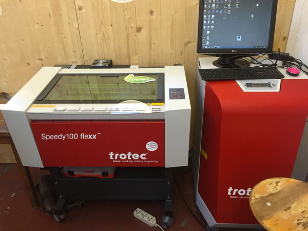
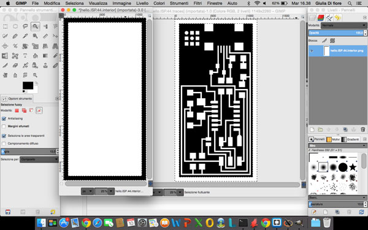
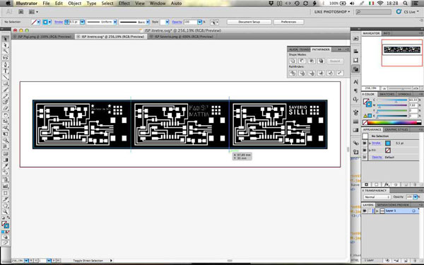
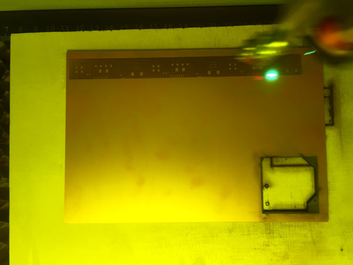
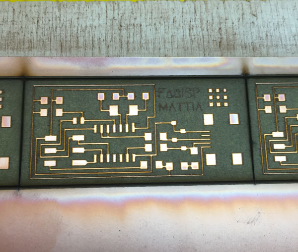
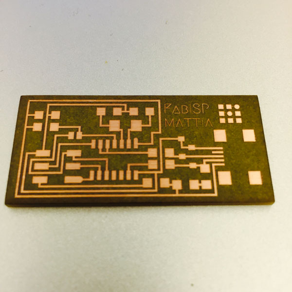
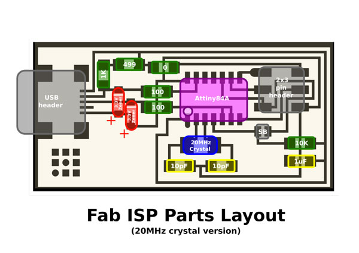
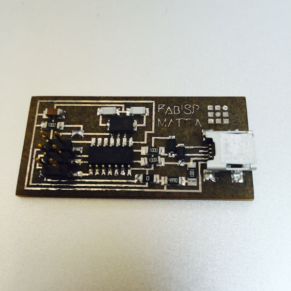

Lesson n. 4:Electronics Production
The Electronics Production assignment is to make the FabISP in-circuit programmer: you have to mill the board, stuff it with components and program it.
FabISP
Initially, here in Opendot, we want to try with different way to make the ISP and compare the results:
- FabISP done with WIN PC-NC, milled with a 0,5mm tip;
- FabISP done directly engraving the metal with a flexx laser from Trotec;
Unfortunately the milling machine doesn't work, and we started with the direct engraving method.
For this experiment we used the Trotec Speedy 400 flexx.

This kind of Laser Engraving Machine have 2 type of lasers:- CO2 Laser;
- Fiber Laser, that can engrave matel;
Before start engraving our FabISP on the FR1, we do some test with the Speedy 400 (you can see the step of the experimental test on the week 4 page of my mate Enrico Bassi).
Electronics Production
Following the tutorial I downloaded the .png file of FabISP and then I imported in Gimp to adapt it for use with the laser cutter: the laser will remove the parts colored black, and leave only those colored white.


To optimize the timing of realization we have created, with my mates Saviero Silli and Pierluigi de Palo, a single file to be sent to print with the laser cutter.

In the file created with the 3 FabISP, besides the black layer, we have included, in the red layer, the lines for cutting the boards. After completion of the changes to the file, we did start the laser cutter.

Here you can see some videos of the laser cutter in action:
This is the result after the engraving:

Once engraved the FR1, I clean with the degreaser to remove the residues of copper powder that had remained on the surface. Below you can see the difference after cleaning:

Once ready the card, I prepared all the components to be soldered:
- n. 1 ATTiny 44 microcontroller
- n. 1 Capacitor 1uF
- n. 2 Capacitor 10 pF
- n. 2 Resistor 100 ohm
- n. 1 Resistor 499 ohm
- n. 1 Resistor 1K ohm
- n. 1 Resistor 10K
- n. 1 6 pin header
- n. 1 USB connector
- n. 2 jumpers (1 soldering bridge and 1 0 ohm resistor)
- n. 1 Cystal 20MHz
- n. 2 Zener Diode 3.3 V
- n. 1 usb mini cable
- n. 1 ribbon cable
- n. 2 6 pin connectors
For soldering I followed the rules on the tutorial and keeping in view the layout of FabISP.

